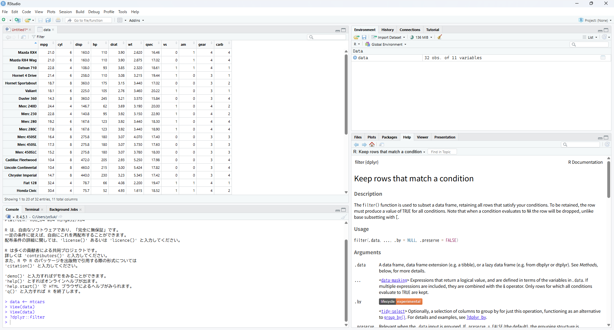

mean(c(1, 2, 3, 4, 5))[1] 3このページでは、Rを使うために事前に知っておいた方がいいと思うことを整理したいと思います。
統合開発環境（IDE; RStudioなど）に依らず、共通して使える知識が中心です。
Rにはパッケージとそれに含まれる関数という2つの重要な概念があります。
パッケージとは、Rの機能を拡張するための追加モジュールのことです。Rには基本的な機能が備わっていますが、特定の分析手法やデータ操作を行うためには、追加のパッケージをインストールして利用する必要があります。
というより、もはやRの基本機能だけでできることは限られており、実際のデータハンドリングや分析ではパッケージを使わないことはほぼありません。
例えば有名なものにdplyrパッケージがあります。データに新たな変数を追加したり、特定の行や列だけを抽出したりと、一般にデータを扱う上で非常に便利な機能をたくさん含んだパッケージです。
はじめにでパッケージのインストールについて説明しました。そこで記した通り、始めて使う場合にはインストールから行う必要があり、先述の通りinstall.packages("dplyr")のようにしてインストールします。
また、実際に使う際にはあらかじめ読み込んでおく必要があります1。読み込みは以下のようにします。
library(dplyr)関数とは、特定の処理を行うための命令のことです。Rでは、データの読み込み、加工、分析、可視化など、さまざまな操作を関数を使って実行します。デフォルトで使えるものもあれば、パッケージを読み込んで初めて使えるようになるものもあります。
例えば、デフォルトで使えるmean()関数は数値の平均を計算するための関数です。使い方は以下の通りです。
mean(c(1, 2, 3, 4, 5))[1] 3c(1, 2, 3, 4, 5)は5つの数値をまとめたベクトルで、mean()関数に渡すことでその平均値が計算されます。出力された結果を見てもわかる通り、平均値は3です。
ベクトルとは、複数の値をまとめたものです。c()関数（cは「combine」の意味）を使って作成します。
# 数値のベクトル
numbers <- c(1, 2, 3, 4, 5)
print(numbers)[1] 1 2 3 4 5# 文字列のベクトル
names <- c("太郎", "花子", "次郎")
print(names)[1] "太郎" "花子" "次郎"ベクトルは全て同じ型のデータを含む必要があります。Rでは、ベクトルに対して一度に計算を行うことができます（ベクトル化）。
# すべての要素に2を掛ける
numbers * 2[1] 2 4 6 8 10ベクトルについて詳しくは「Rの基礎 - データ型とベクトル」の章で学びます。
先ほど挙げたdplyrパッケージにも多くの関数が含まれており、例えばfilter()関数はデータフレームから特定の条件を満たす行だけを抽出するための関数です。
library(dplyr)
data <- data.frame(
name = c("Yosuke", "Kosuke", "Sosuke", "Ryosuke"),
age = c(25, 30, 35, 40)
)
filtered_data <- filter(data, age > 30)
print(filtered_data) name age
1 Sosuke 35
2 Ryosuke 40dataには4人の名前と年齢が入ったデータフレームが格納されており、nameという列に4人の名前、age列に年齢を格納しています。filter(data, age > 30)とすることで、dataの中でageが30より大きい行だけを抽出し、filtered_dataに格納しています。最後にprint(filtered_data)で結果を表示しています。
パッケージを読み込まずにdplyr::filter(data, age > 30)としても同義です。
ここでは大まかにデータを使うためにはパッケージが必要で、そこに含まれる関数を使って処理を行う、ということを理解していただければと思います。
Rでは、ファイルの読み書きを行う際にワーキングディレクトリという概念が重要になります。
この点についてはプロジェクトを始めるの章で発展的に扱いますが、ここをおろそかにするとトラブルのもとですし、より効率的なコードを書くためにも重要ですので、ご存じでなかった方にはぜひご理解いただければと思います。
ワーキングディレクトリ（以降WDと略します）とは、Rがファイルの読み書きを行う際の基準となるフォルダのことです。大雑把にディレクトリ＝フォルダと考えてください。
WDはRを起動したときに自動で設定されますが、実際には必要な作業に応じてフォルダを作成して作業をすることになるため、自分で設定し直す必要があります。
ワーキングディレクトリを設定することによる一番の恩恵は、ファイルのパスを短くできることです。
絶対パスと相対パスをご存じでしょうか？絶対パスとは、WindowsであればC://Users/ユーザー名/Documents/data/dataset1.csvのように、ルートディレクトリ（WindowsであればC://、Macであれば/）から始まる、あるファイルやフォルダのパスのことです。これを指定すると絶対にそのファイルを参照できる一方、非常に長くなってしまうという欠点があります。また、フォルダ整理で場所を移行したり、他のPCで同じコードを実行したりすると、当然そのパスは変わってしまうため、コードが動かなくなってしまいます。
一方、相対パスとは、現在の場所から見た目的にそのファイルやフォルダがどこにあるかを示すパスです。例えば、data/dataset1.csvのように、現在のフォルダから見てdataフォルダの中にあるdataset1.csvを指します。ここでいう「現在のフォルダ」というのがワーキングディレクトリですが、これは自分で設定する必要があります。
C://、Macであれば/Rで現在のWDを確認するには、getwd()関数を使います。
もし「それをどこに打ち込めばいいんだ…？」という方であれば、RStudioをいじってみるの章を先にご確認いただき、RStudioのコンソール画面に打ち込んでみてください。
getwd()[1] "C:/Users/yo5uk/life_with_r"私はWindowsのローカルでこのページを作成していますので、Cから始まるC:/Users/yo5uk/life_with_rと出力されています。
getwd()で表示されたディレクトリ以下のフォルダやファイルを参照する場合、相対パスで指定できます。例えば、dataフォルダの中にあるdataset1.csv2を参照する場合、data/dataset1.csvと書けばよいことになります。
RでWDを変更するには、setwd()関数を使います。
もし現在のWDがC://Users/ユーザー名/Documentsで、新たにWDをC://Users/ユーザー名/projects/project1に変更したい場合、以下のようにします。
setwd("C://Users/ユーザー名/projects/project1")これでWDが変更されました。ダブルクォーテーションで囲むのを忘れないでください。getwd()で確認すると、設定できていることがわかるかと思います。
Windowsの場合
setwd()の引数にペーストするRStudioにおけるWDの確認、変更方法については、第3章で説明します。
PositronにおけるWDの確認、変更方法については、第4章で説明します。
Rでは、コードを書く場所としてスクリプトとコンソールの2つがあります。
スクリプトとは、Rのコードを保存しておくためのファイルのことです。Rでは通常、拡張子が.Rのファイルにコードを書きます。
スクリプトに書いた内容は、後から読み返したり、修正したり、再実行したりできるため、作業の記録としても非常に重要です。分析を進めるうちに何度も同じ処理を行いたくなることがありますが、そのときにスクリプトを使っておけば、同じ手順を再現するのが簡単になります。
また、source()関数を使うと、保存したスクリプトを一括で実行することもできます。例えば、source("analysis.R")と入力すれば、analytics.Rファイルに書かれたコードが上から順に実行されます。使うシーンの例としては、複数のファイルで共通して使うコードや関数などを別ファイルとして作っておき、それをsource()で読み込めば、同じコードをすべてのファイルで毎回書く必要がなくなります。
コンソールとは、Rに直接コードを入力して、その場で実行できる場所です。スクリプトに書かずに、すぐに結果を見たいときに便利です。
例えば、コンソールで1 + 1と入力してEnterを押すと、すぐに[1] 2と結果が表示されます。簡単な計算や関数の動作確認など、試し打ちをしたいときに最適です。
ただし、コンソールに入力したコードはファイルとして保存されないため、あとから見返すことはできません3。
コンソールの場所はIDEによって異なりますが、RStudioとPositronの章で改めて説明します。
どちらを使っても結果は同じですが、スクリプトに書いておくことで分析を「再現できる」ようになります。 Rでの作業は試行錯誤の連続なので、スクリプト上で書く → 実行する → 修正するという流れを繰り返し、最終的なコードを完成させていきます。
よって、基本的にはスクリプトに書くことを心がけ、コンソールは試し打ちや動作確認に使うのがよいでしょう。
コンソールではもう一つ便利な機能があります。それは、パッケージのドキュメントをすぐに見ることができることです。
Rにはさまざまな関数がありますが、それらの関数がどのような働きをするのか、引数は何を指定すればよいのか、戻り値は何か、といったことがわからなかったり忘れたりすることはよくあります。
そのようなときは、コンソールで?[パッケージ名]::[関数名]と入力することで、その関数のドキュメントをすぐに確認できます。ドキュメントというのは、その関数の説明書みたいなもので、パッケージの開発者によって引数（関数内で指定する値）の説明や使用例が記載されています。
例えば、dplyrパッケージのfilter()関数のドキュメントを見たい場合、以下のように入力します4。
?dplyr::filterすると、RStudioであれば右下のヘルプ画面にfilter()関数のドキュメントが表示されます。

filter()関数のドキュメント有名な関数であれば日本語の記事がインターネット上にたくさんありますが、マイナーな関数や新しい関数の場合はドキュメントを読むことで理解が深まる場合もよくありますので、ぜひ活用してみてください。
Rを始めたばかりでよくつまずくポイントをまとめました。エラーが出たときは、まずこれらを確認してみてください。
# ❌ エラーになる
setwd(C:/Users/name/Documents)
# ✅ 正しい
setwd("C:/Users/name/Documents")# ❌ 全角スペースが入っている（見た目ではわかりにくい）
mean(c(1, 2, 3))
# ✅ 半角スペース
mean(c(1, 2, 3))# ❌ パッケージを読み込んでいない
filter(data, age > 30) # dplyrのfilter関数が使えない
# ✅ 先に読み込む
library(dplyr)
filter(data, age > 30)# Rは大文字・小文字を区別します
Mean(c(1, 2, 3)) # ❌
mean(c(1, 2, 3)) # ✅ここまで学んだ内容を確認しましょう。以下の問題に挑戦してみてください。
コンソールで現在のワーキングディレクトリを確認してください。
解答例
getwd()mean()関数を使って、10, 20, 30, 40, 50の平均値を計算してください。
解答例
mean(c(10, 20, 30, 40, 50))
# 結果: 30sum()関数（合計を計算する関数）のヘルプを表示してください。
解答例
?sum
# または
help(sum)以上でRを使う前に知っておくと有益な基本事項の説明を終わります。それでは次の章からはIDEの使い方を説明していきます。
実際はdplyr::filter()のようにパッケージ::関数の形で記述すれば、library()で読み込まずとも使えます。しかし、各関数がどのパッケージのものかが明確である反面、コードが非常に長くなってしまうため、先に読み込むことが一般的です。複数のパッケージで関数名が重複しており、明示的にかき分けたい場合などには役に立ちます。↩︎
絶対パスの場合はC://Users/ユーザー名/Documents/data/dataset1.csvとなります。↩︎
細かい話をすれば.Rhistoryというファイルが自動で生成され実行したコードは振り返ることができますが、エラーが出た関数等も保存されるので、見返すのには不向きです。↩︎
これは一時的に参照したい類のものですので、スクリプトではなくコンソールに打ち込むのがよいと思います。↩︎